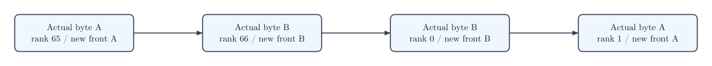
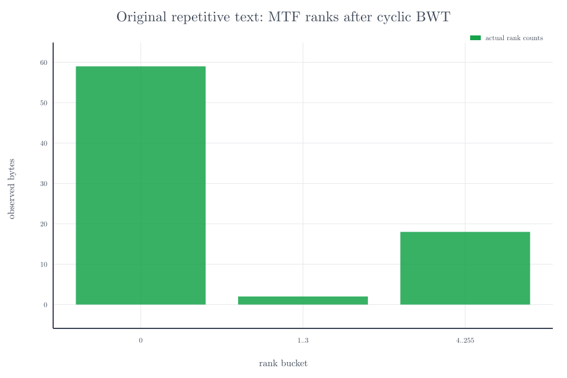
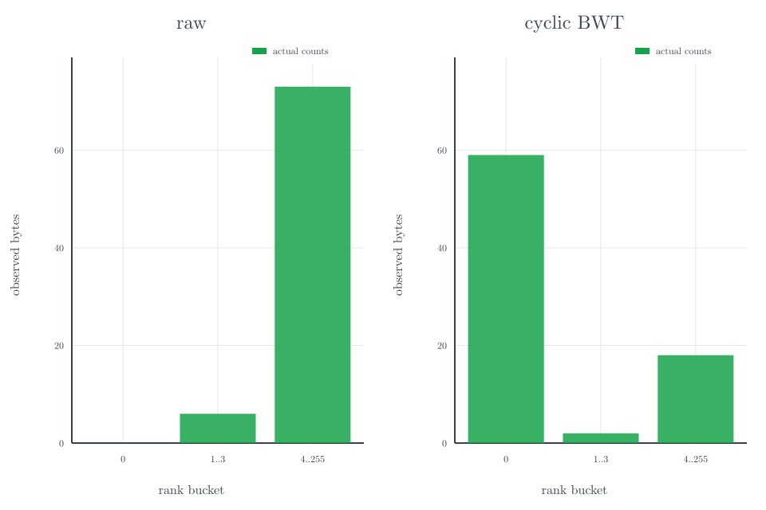
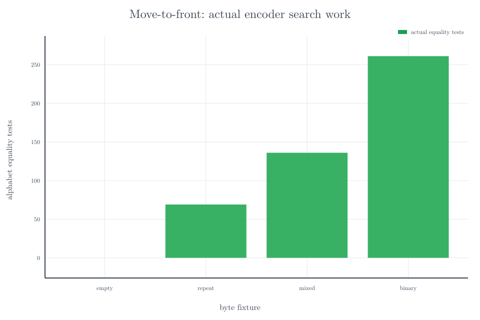

Move-to-front recoding
Abstract
Recode a byte stream so that recently seen bytes receive small integer ranks while preserving every original byte exactly. Move-to-front maintains an evolving alphabet that encoder and decoder can reproduce together. We inspect actual moves on four bytes, retain the original repetitive-text/BWT example, and measure real rank distributions and work without claiming that integer ranks alone compress the data.
The shared permutation is the invariant
Start with the unsigned-byte alphabet0..255. For each byte, encode its current zero-based position, move preceding entries one place right and put the selected byte at the front. The decoder looks up the received position in its identical current permutation and performs the same move. Initially the permutations agree; if they agree before one byte, the rank selects the same byte and both updates agree afterward. Induction proves exact reversibility, including NUL and bytes128..255.
A repeated byte after its first occurrence has rank zero, since it is already at the front. A byte revisited after other distinct bytes has rank equal to the number of distinct bytes used since its previous occurrence. First occurrences instead depend on the initial unsigned-byte order. These are recency statements, not an entropy-coding algorithm. The returned vector stores ints; its memory representation can be larger than the original bytes.
Four actual moves: ABBA
Starting from the full256-byte alphabet, ABBA produces ranks65,66,0,1. The two B bytes demonstrate the rank-zero rule. The final A is behind only B, so its rank is one. Every node below reads the actual selected byte, rank and previous front from the producer, and the table records actual equality tests and shifts.
#include <dm/dm.hpp>
int main() {
std::filesystem::create_directories("build");
auto t = dm::algorithms::mtf_encode_trace("ABBA");
dm::graphics::Diagram d;
std::print("| position | byte as integer | actual rank | previous front byte | actual comparisons | " "actual shifts |\n| ---: | ---: | ---: | ---: | ---: | ---: |\n");
for (auto &s : t.steps) {
std::print("| {} | {} | {} | {} | {} | {} |\n", s.index,
unsigned(s.byte), s.rank, unsigned(s.front_before),
s.comparisons, s.shifts);
auto id = std::to_string(s.index);
d.node(id, {6.0 * s.index, 0},
std::format("Actual byte {}\nrank {} / new front {}",
char(s.byte), s.rank, char(s.byte)));
if (s.index)
d.edge(std::to_string(s.index - 1), id);
}
std::print("\nNative inverse: {}.\n",
dm::algorithms::mtf_decode(t.result.indices));
d.save_svg("build/mtf_tiny.svg");
}| position | byte as integer | actual rank | previous front byte | actual comparisons | actual shifts |
|---|---|---|---|---|---|
| 0 | 65 | 65 | 0 | 66 | 65 |
| 1 | 66 | 66 | 65 | 67 | 66 |
| 2 | 66 | 0 | 66 | 1 | 0 |
| 3 | 65 | 1 | 66 | 2 | 1 |
Native inverse: ABBA.

Retain the original repetitive text after BWT
The original text repeats “the quick brown fox” four times with intervening spaces. The native cyclic Burrows–Wheeler transform retains its primary row and appends no sentinel. MTF then recodes its transformed bytes. The full pipeline inverse first decodes the MTF ranks and then applies the BWT inverse with that original primary row; discarding that row would lose required BWT information.
The original three rank buckets are retained, but median and mean are now actually computed instead of printing an assumed median. Empirical marginal entropy describes this rank distribution; it is not a measured compressed file size. This example illustrates the BWT/MTF stages rather than claiming to implement a complete bzip2 stream.
#include <dm/dm.hpp>
int main() {
std::filesystem::create_directories("build");
auto text = dm::algorithms::mtf_demo_text();
auto bw = dm::algorithms::bwt_transform(text);
auto encoded = dm::algorithms::mtf_encode_analyze(bw.transformed);
auto summary = dm::algorithms::mtf_index_summary(encoded.indices);
auto decoded = dm::algorithms::mtf_decode(encoded.indices);
bool restored = dm::algorithms::bwt_inverse({decoded, bw.index}) == text;
std::print("| bytes | BWT primary row | full round trip | median rank | mean rank | empirical marginal " "entropy bits/rank |\n| ---: | ---: | --- | ---: | ---: | ---: |\n| {} | {} | {} | {} | {} | " "{} |\n",
text.size(), bw.index, restored, summary.median, summary.mean,
summary.entropy_bits);
auto p =
dm::graphics::RPlot::barplot({double(summary.zeros),
double(summary.one_to_three),
double(summary.four_or_more)},
{"0", "1..3", "4..255"},
"actual rank counts");
p.title("Original repetitive text: MTF ranks after cyclic BWT").x_label(
"rank bucket").y_label("observed bytes").save_svg(
"build/mtf_original.svg");
}| bytes | BWT primary row | full round trip | median rank | mean rank | empirical marginal entropy bits/rank |
|---|---|---|---|---|---|
| 79 | 63 | true | 0 | 22.126582278481013 | 1.6983272366010005 |

Compare raw order with BWT order
BWT preserves byte frequencies but changes their order, often clustering equal bytes. MTF depends on recency rather than byte frequency alone, so its rank distribution can change. The next pair of panels compares actual ranks for the same original text with and without BWT. Identical count axes keep the buckets comparable. A benefit on this finite repetitive input is not a universal ordering or compression guarantee.
#include <dm/dm.hpp>
int main() {
std::filesystem::create_directories("build");
auto text = dm::algorithms::mtf_demo_text();
auto bw = dm::algorithms::bwt_transform(text);
auto layout = dm::graphics::RLayout::create(1, 2);
std::print("| ordering | zero ranks | ranks1..3 | ranks4..255 | actual median | empirical entropy |\n| " "--- | ---: | ---: | ---: | ---: | ---: |\n");
for (auto &item : std::vector<std::pair<std::string, std::string>>{
{"raw", text}, {"cyclic BWT", bw.transformed}
}) {
auto s =
dm::algorithms::mtf_index_summary(dm::algorithms::mtf_encode(
item.second));
std::print("| {} | {} | {} | {} | {} | {} |\n", item.first, s.zeros,
s.one_to_three, s.four_or_more, s.median, s.entropy_bits);
auto p =
dm::graphics::RPlot::barplot({double(s.zeros),
double(s.one_to_three),
double(s.four_or_more)},
{"0", "1..3", "4..255"},
"actual counts");
p.title(item.first).x_label("rank bucket").y_label("observed bytes").y_limits(0, text.size());
layout.add(p);
}
layout.fit_panels().save_svg("build/mtf_order.svg");
}| ordering | zero ranks | ranks1..3 | ranks4..255 | actual median | empirical entropy |
|---|---|---|---|---|---|
| raw | 0 | 6 | 73 | 15 | 2.689896168868724 |
| cyclic BWT | 59 | 2 | 18 | 0 | 1.6983272366010005 |

Exact work and complete inverse guards
For each encoded byte with rank r, linear search performs r+1 equality tests and movement performs r right shifts. Thus comparisons equal shifts plus n. Decode indexes its supplied rank directly, so its search-comparison count is zero while its movement count is identical. This does not mean decoding performs no work. The256 initial stores, output allocations and direct loads are outside those counters.
With alphabet size256 fixed, worst-case work is O(256n), linear in stream length, and the driver alphabet occupies256 bytes. Outputs require n elements; optional trace adds n fixed-size records and retains the original stream. The complete capture quota counts input, output and step entries, exactly3n; default1000000, zero disables. A nonzero insufficient cap throws before copying or transformation. Every decoder rank is validated in0..255 before quota checks or indexing, correcting the old unchecked invalid-index behavior.
#include <dm/dm.hpp>
int main() {
std::filesystem::create_directories("build");
std::vector<std::string> labels{"empty", "repeat", "mixed", "binary"}, inputs{"", "AAAA", "ABBA", std::string("\0\xff\0\xff", 4)};
std::vector<double> comparisons;
std::print("| case | bytes | encoder comparisons | encoder shifts | decoder search comparisons | " "decoder shifts | round trip |\n| --- | ---: | ---: | ---: | ---: | ---: | --- |\n");
for (std::size_t i = 0; i < inputs.size(); ++i) {
auto e = dm::algorithms::mtf_encode_analyze(inputs[i]);
auto d = dm::algorithms::mtf_decode_analyze(e.indices);
comparisons.push_back(e.comparisons);
std::print("| {} | {} | {} | {} | {} | {} | {} |\n", labels[i],
inputs[i].size(), e.comparisons, e.shifts, d.comparisons,
d.shifts, d.bytes == inputs[i]);
}
auto p =
dm::graphics::RPlot::barplot(comparisons, labels,
"actual equality tests");
p.title("Move-to-front: actual encoder search work").x_label("byte fixture").y_label("alphabet equality tests").save_svg("build/mtf_work.svg");
}| case | bytes | encoder comparisons | encoder shifts | decoder search comparisons | decoder shifts | round trip |
|---|---|---|---|---|---|---|
| empty | 0 | 0 | 0 | 0 | 0 | true |
| repeat | 4 | 69 | 65 | 0 | 65 | true |
| mixed | 4 | 136 | 132 | 0 | 132 | true |
| binary | 4 | 261 | 257 | 0 | 257 | true |

Conclusion and references
The shared alphabet invariant proves lossless inversion. Actual move records explain the small ranks that repetition produces, and the original BWT example demonstrates an order-sensitive distribution change. The histogram and counters describe recoding behavior without treating a vector of integer ranks as a compressed representation. Invalid inverse ranks now fail before indexing, and owned traces expose actual producer decisions.
Bentley and colleagues, A locally adaptive data compression scheme (1986) describes move-to-front recency coding. Burrows and Wheeler, A Block-sorting Lossless Data Compression Algorithm (1994) supplies the block-sorting context; this report uses the native cyclic transform's explicit primary-row contract.
Verification
This ten-report batch passes76 CTest cases,22 directly instrumented ASan/UBSan
cases,119 compiled and executed public examples,513/513 scoped documentation
definitions and ten representative clangd hovers. Independent Python Fraction
arithmetic and likelihood/mass reconstruction verify5266 captured records
with43990 checks, including the original Gaussian controls. Frozen valid-input
comparisons cover DFA quotients, byte recoding, event streams, interpolation,
tours, alignments, real-root paths, packing and nested-sampling trajectories.
Ten checkout headers and ten byte-identical installed development headers
compile independently; an installed-header native consumer links and runs. The
batch has42 executed complete programs and42 visually reviewed native figures,
with HTML/Markdown result and image-byte checks. These are scoped native checks,
not an installation claim for every language binding. Receipts:
build/mepml-conversion/batch-244-253/.